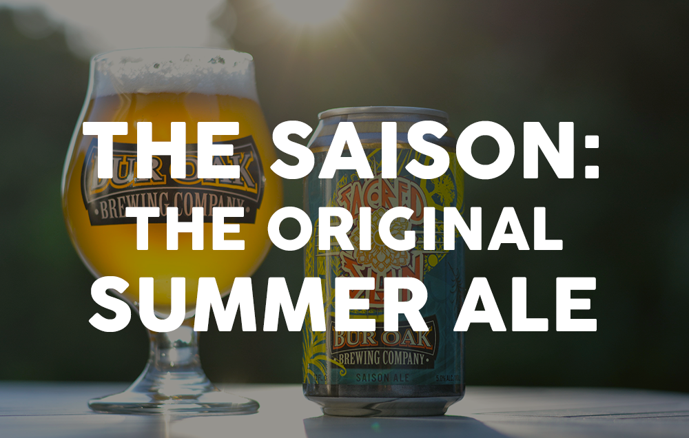

Blog
Featured: How to Speak the Language of Craft Beer
Nov. 8, 2016

With all the different beer styles out there, it can be overwhelming to sort through the vocab and understand what makes one beer distinct from another. Sure, you probably know the difference in taste between a pale ale and a porter, but when your overly curious work buddy asks you if a stout is a lager, your beer brain suddenly fizzes out. So, we’ve decided to break down the ABC’s of beer to help you understand the complexities of each style. Consider this your Rosetta Stone for speaking the language of craft beer.
Aroma: The Unsung Hero of Taste
Aug. 19, 2016
For most people, once a beer is poured and slid across the bar, the first step is to start chuggin’. Sure, you may have an appreciation for the taste, but there is a more subtle quality of beer that you might be missing out on. It’s one of the most important (and most overlooked) characteristics of beer − the smell.
Golden Ryetio
July 21, 2016

Our brand new Golden Ryetio is a nod to the Golden Ratio found in nature and design (and now beer). The Fibonacci sequence inspired the grain bill (which includes rye malt) for this mildly sweet and well-balanced Belgian style ale. (And yes, we are aware that we are nerds. You’ll thank us when you try this beer.)
How To Craft The Perfect Backyard BBQ
July 20, 2016

Summer is in full swing and with it comes one of our favorite pastimes: backyard BBQs! It’s time to break out the grill and let your friends at Bur Oak Brewing Company help you craft the perfect BBQ.
Bur Oak Brewing Summer Cocktails
July 18, 2016

Craft beer will always be our favorite summertime drink, but sometimes it’s fun to change things up! Any party can offer the usual drinks, but we’re here to take yours to the next level. We’ve crafted our very own cocktail recipe and the perfect summer sangria, both of which pair the tangy flavor of orange and the sweet taste of berries. Using our summer brew Lily Ale as a base, both of these drinks have the potential to make any gathering you’re hosting a hit with all of your guests. We’re loving these new recipes, so let us know if you are too!
The Secrets of the Saison: The Original Summer Ale
July 11, 2016
Most styles of beer carry a well-defined ancestry − a consistent, surveyable history that brewers and drinkers alike can tap into to fully appreciate a certain brew. The saison, however, is a different story.
Fish Tacos with Spiced Aioli Sauce
July 29, 2014
Learn how to make delicious fish tacos which pairs perfectly with our Sacred Sun Saison Ale!
Seared Sea Scallops with Jalapeno Vinaigrette
July 29, 2014

Pair your spicy sea scallops with our Trail Bender Wheat Ale.
Veal Parmesan
July 29, 2014
Your veal parmesan will taste even better paired with Boone County Brown Ale.
Asian Barbecue Burger
July 28, 2014

Follow this recipe to learn how to grill up an asian barbecue burger.